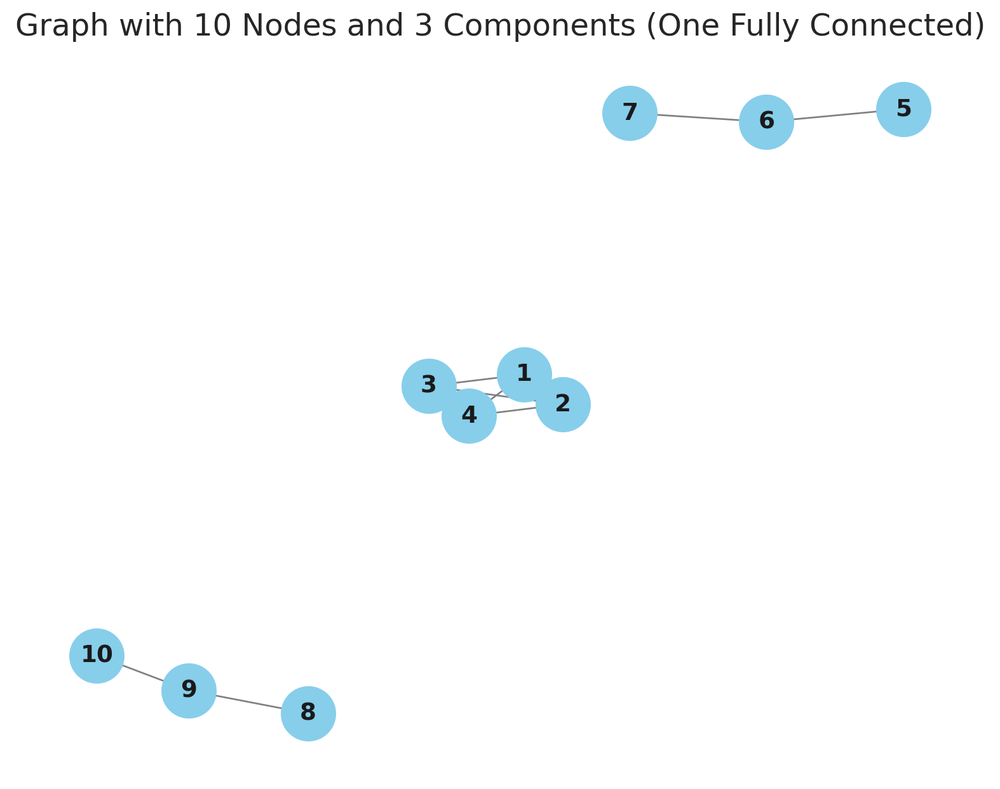

import pandas as pd
import geopandas as gpd
from sklearn.cluster import KMeans
from sklearn.preprocessing import StandardScaler
# Example dataset (San Diego tracts)
data = gpd.read_file('~/data/385/sandiego_tracts.gpkg')
# Select clustering variables
cluster_variables = ["median_house_value", "pct_white", "pct_rented", "pct_hh_female", "pct_bachelor", "median_no_rooms", "income_gini", "median_age", "tt_work"]
data.plot('median_house_value')Clustering and Regionalization in Geographic Data Science
Clustering
What is Clustering?
- Definition: Grouping observations based on multivariate similarity.
- Purpose: Simplify complex, multidimensional data into clusters.
- Applications:
- Geodemographic clusters in San Diego Census tracts.
- Socioeconomic analysis using clustering.
How Clustering Works
- Unsupervised Learning: No labels, groups based on similarity.
- Multivariate Processes: Clusters represent similarities in many variables.
- Profile Creation: Simplifies the interpretation of complex data.
Example: Socioeconomic clustering
Data Preparation: Scaling
Data Preparation: Scaling
# Scale the data
scaler = StandardScaler()
scaled_data = scaler.fit_transform(data[cluster_variables])
scaled_data[0:5, 0:3]array([[ 8.12429126e-01, 1.23188973e+00, -2.41143211e-01],
[-1.56149785e-01, 4.51803106e-01, -9.86504682e-01],
[ 1.55147988e+00, 1.00521260e+00, -6.60192373e-01],
[-1.38580040e-01, 5.13751652e-01, -1.02462658e+00],
[-2.17594415e-16, 2.25001983e-01, 2.30262050e+00]])KMeans
Ward’s Hierarchical Clustering
- Definition: Agglomerative clustering method.
- Steps:
- Start with each observation as its own cluster.
- Merge clusters based on proximity.
- Create a hierarchy of clustering solutions.
- Application: Socioeconomic clusters of San Diego.
Example: Ward’s Method
Cluster Profile: Data Setup
tidy_db = data.set_index('ward_cluster')
tidy_db = tidy_db[cluster_variables]
tidy_db = tidy_db.stack()
tidy_db = tidy_db.reset_index()
tidy_db = tidy_db.rename(
columns={"level_1": "Attribute", 0: "Values"})
tidy_db.head()| ward_cluster | Attribute | Values | |
|---|---|---|---|
| 0 | 1 | median_house_value | 732900.000000 |
| 1 | 1 | pct_white | 0.916988 |
| 2 | 1 | pct_rented | 0.373913 |
| 3 | 1 | pct_hh_female | 0.052896 |
| 4 | 1 | pct_bachelor | 0.000000 |
import seaborn
import matplotlib.pyplot as plt
seaborn.set(font_scale=1.5)
# Setup the facets
facets = seaborn.FacetGrid(
data=tidy_db,
col="Attribute",
hue="ward_cluster",
sharey=False,
sharex=False,
aspect=2,
col_wrap=3,
);
# Build the plot from `sns.kdeplot`
_ = facets.map(seaborn.kdeplot, "Values", shade=True).add_legend();
facets.savefig("facets.png")
plt.close()Cluster Profiles

Spatial Autocorrelation and Clustering
Regionalization
What is Regionalization?
- Definition: Clustering with geographic constraints.
- Importance: Ensures clusters are both statistically and spatially coherent.
Spatial Weights in Regionalization
- Spatial Weights Matrix: Defines connectivity (e.g., Queen contiguity, K-nearest neighbors).
Example: Spatially Constrained Clustering
from libpysal.weights import Queen
# Use spatial weights to constrain clustering
wq = Queen.from_dataframe(data)
ward_spatial = AgglomerativeClustering(n_clusters=5, linkage="ward",
connectivity=wq.sparse)
data['ward_spatial_cluster'] = ward_spatial.fit_predict(scaled_data)
data.plot(column='ward_spatial_cluster', categorical=True, legend=True)
Clusters versus Regions
Clusters versus Regions
- Connected Component: a subgraph in which any two vertices are connected to each other by paths.
- Regions: formed as connected components defined on the spatial adjacency graph
- Multivariate Clusters: may or may not be spatially connected components
Connected Components

Ward Cluster Graph
| Number of nodes: | 628 |
| Number of edges: | 114490 |
| Number of connected components: | 5 |
| Number of isolates: | 0 |
| Number of non-zero edges: | 114490 |
| Percentage of non-zero edges: | 29.03% |
| Number of asymmetries: | NA |
| S0: | 114490 | GG: | 114490 |
| S1: | 228980 | G'G: | 114490 |
| S3: | 106484296 | G'G + GG: | 228980 |
Graph indexed by:
[0, 5, 9, 10, 13, ...]
Spatial Ward Cluster Graph
| Number of nodes: | 628 |
| Number of edges: | 142610 |
| Number of connected components: | 5 |
| Number of isolates: | 1 |
| Number of non-zero edges: | 142610 |
| Percentage of non-zero edges: | 36.16% |
| Number of asymmetries: | NA |
| S0: | 142610 | GG: | 142610 |
| S1: | 285220 | G'G: | 142610 |
| S3: | 144306296 | G'G + GG: | 285220 |
Graph indexed by:
[0, 1, 3, 7, 12, ...]
Queen Graph
| Number of nodes: | 628 |
| Number of edges: | 4016 |
| Number of connected components: | 1 |
| Number of isolates: | 0 |
| Number of non-zero edges: | 4016 |
| Percentage of non-zero edges: | 1.02% |
| Number of asymmetries: | NA |
| S0: | 4016 | GG: | 4016 |
| S1: | 8032 | G'G: | 4016 |
| S3: | 113728 | G'G + GG: | 8032 |
Graph indexed by:
[0, 1, 2, 3, 4, ...]
Intersection Graph (Queen + Ward )
| Number of nodes: | 628 |
| Number of edges: | 2208 |
| Number of connected components: | 80 |
| Number of isolates: | 33 |
| Number of non-zero edges: | 2208 |
| Percentage of non-zero edges: | 0.57% |
| Number of asymmetries: | NA |
| S0: | 2208 | GG: | 2208 |
| S1: | 4416 | G'G: | 2208 |
| S3: | 41312 | G'G + GG: | 4416 |
Graph indexed by:
[0, 1, 2, 3, 4, ...]
Intersection Graph (Queen + Ward Spatial)
| Number of nodes: | 628 |
| Number of edges: | 3394 |
| Number of connected components: | 5 |
| Number of isolates: | 1 |
| Number of non-zero edges: | 3394 |
| Percentage of non-zero edges: | 0.86% |
| Number of asymmetries: | NA |
| S0: | 3394 | GG: | 3394 |
| S1: | 6788 | G'G: | 3394 |
| S3: | 83704 | G'G + GG: | 6788 |
Graph indexed by:
[0, 1, 2, 3, 4, ...]
Code
import matplotlib.pyplot as plt
fig, axes = plt.subplots(1,2, figsize=(12,6))
data.plot(column='ward_cluster', categorical=True, ax=axes[0], linewidth=0.1)
axes[0].set_title('Ward')
axes[0].axis('off')
data.plot(column='ward_spatial_cluster', categorical=True, ax=axes[1], linewidth=0.1, legend=True,
legend_kwds={'bbox_to_anchor': (1.3, 1),
'title': "Cluster"})
axes[1].set_title('Ward Spatial')
axes[1].axis('off')
plt.tight_layout()Comparison
| Method | Clusters | Regions |
|---|---|---|
| Ward | 5 | 80 |
| Spatial Ward | 5 | 5 |
Conclusion
Recap of Key Points
- Multivariate Clustering
- Regionalization
- Clusters versus Regions
Questions